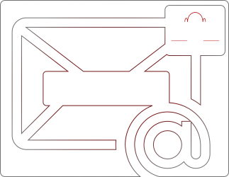

Desarrollo freelance de herramientas, aplicaciones y sistemas con el objetivo de optimizar procedimientos de trabajo.
Trabajo focalizado en el cliente para entender sus necesidades y diseñar soluciones adaptadas a la medida de sus requerimientos.
... ¿Quien soy? ...
Soy de Buenos Aires, Argentina y me dedico al desarrollo de software orientado a la optimización de procedimientos.
Sigmio fue creado con el fin de dar a conocer mis experiencias y transmitir los conceptos principales utilizados en mi trabajo.
Python es la columna vertebral en mis desarrollos, sin embargo, utilizo diferentes lenguajes, recursos y tecnologías según las características de cada caso.
Me encuentro en un constante proceso de formación e investigación acerca de nuevas tecnologías y tendencias.
La planificación y análisis es fundamental.
Se basa en comprender la problemática y objetivos del cliente para acordar y establecer en conjunto las estrategias a utilizar en los proyectos.
Se promueven soluciones personalizadas, manteniéndolo informado e integrándolo activamente en las diferentes etapas de los desarrollos.
El objetivo principal es garantizar resultados que respondan a sus necesidades.
... ¿De que se trata? ...
AUTOMATIZACION DE TAREAS
La automatización es un gran aliado a la hora de simplificar tareas repetitivas y escenarios previsibles dentro de nuestro trabajo.
Este tipo de herramientas se basan en emular interacciones de usuario actuando en base a reglas y condiciones preestablecidas.
Puede ser aplicada sobre una gran variedad de áreas y ámbitos.
Automatización web
Manipulación del navegador web y aplicaciones online.
Logins Descargas Registros Consultas
Automatización local
Interacción con programas y sistemas ejecutados a nivel local.
Data-entry ERP Conciliación
Flujos de trabajo
Optimización de componentes en procedimientos complejos.
Reportes Plantillas Compilación Gestión
ANALISIS DE DATOS
Transformación de datos en recursos útiles...
Una mejor gestión de la información nos permite tomar decisiones más inteligentes y estratégicas en la búsqueda de mejores resultados y mayores beneficios.
Gestión, segmentación y modelado sobre grandes volúmenes de datos
# DBs @ Querys / Filtros || Relaciones
Patrones y tendencias para la toma de decisiones informadas.
Estrategia Proyecciones Orientación
Gráficos y estadística para el análisis de información
Dashboard Ventas Compras Inventarios
INTERFACES DE USUARIO
Las interfaces de usuario en muchos casos conforman un rol clave para aumentar la productividad en los procedimientos.
Aplicando principios de usabilidad y alto rendimiento, se logran interfaces optimizadas que se adapten a los objetivos del usuario.
Es importante comprender los ámbitos de ejecución de los programas y de esa forma diseñar las interfaces según su objetivo de uso.
En casos de uso exhaustivo un atajo de teclado logra marcar la diferencia..
Interfaces web
Aplicaciones web ejecutadas en el explorador.
Despliegue tanto en servidores locales como en servidores web.
Flask Django Reflex
Interfaces de escritorio
Aplicaciones ejecutadas a nivel local.
Utilizando tecnologías del framework QT de C++, ampliamente reconocido en la industria del software.
PyQt5 C++ en Python
Ejecución en consola
Aplicaciones ejecutadas en consola.
Aplica a procedimientos que no requieren necesariamente del desarrollo de una interfaz gráfica.
CMD Bash Console
... ¿Contacto? ...
Esta interesado en algún servicio o le gustaría obtener mas información?
Me encuentro a disposición para responder a sus consultas.
No dude en escribirme y ponernos en contacto!
